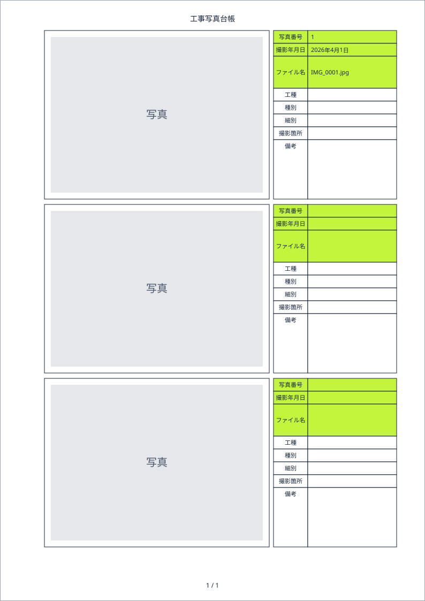

写真を選んで 台帳を作る
写真の
1. 写真を選ぶ
フォルダか写真を、ここへドラッグして落としても読めます。
写真とファイル名は送りません。読むのは、このブラウザの中だけです。
開ける写真はJPEGとPNGです。いちどに300枚までです。
2. 一覧を確かめる
撮影日時の記録が無い写真は、後ろに並びます。
台帳を保存し始めたので、並び順は変えられません。変えるときは「最初からやり直す」を押してください。
| 番号 | 写真 | ファイル名 | 撮影日時 |
|---|
開けなかった写真
3. Excelの台帳を保存する
保存の前に、一覧の写真と並び順を確かめてください。工種、種別、細別、撮影箇所、備考は、できたExcelで打ちます。
できる台帳は A4縦に3枚
できるのは、A4縦で

-
写真の
選び方 フォルダを選ぶ、写真を複数選ぶ、ドラッグして落とす、の3通りがあります。フォルダを選ぶと、下のフォルダの中も読みます。いくつかのフォルダを1冊にしたいときは、上のフォルダを選びます。並び順は、撮影日時の順と名前の順で切り替えられます。
-
自動で
入る欄 写真番号、撮影年月日、ファイル名が入ります。撮影年月日は、写真の中に記録された撮影日時から入れます。
-
空欄で
出る欄 工種、種別、細別、撮影箇所、備考は、空欄で出ます。できたExcelで打ってください。工事名を入れる欄は、いまはありません。
写真の扱いは 3つ決めています
-
写真は
送りません 写真とファイル名と撮影日時は、ブラウザの中だけで扱います。どこにも送りません。このサイトは、閲覧数の集計にCloudflare Web Analyticsを使っています（Cookieを使わず、個人を特定しません）。記録の扱いは、プライバシーポリシーのとおりです。
-
元の写真は
変えません 元の写真は読むだけです。台帳に貼るのは、長い辺を1,200ピクセルに縮めたJPEGの写しです。
-
日時は
作りません 撮影日時の記録が無い写真は、撮影年月日を空欄にします。ファイルの更新日時を、撮影日として入れることはしません。
Excelを組み立てる部品に、ExcelJS 4.4.0（MITライセンス）を使っています。ExcelJSのライセンスの文を、同じ場所に置いています。
できないことと確かめていないこと
- 国の工事の電子納品の代わりにはなりません。国土交通省の「写真管理基準（案）」は、写真の原本を電子媒体で出すことを求めています。この道具が作るのは、Excelの写真帳を求められたときのための台帳です。出典は、国土交通省の「写真管理基準（案）」（令和8年3月改定）です。
- 発注者ごとに、写真帳の決まりが違います。使う前に、様式の指定があるかを発注者に聞いてください。この道具の様式は、1ページに3枚の1つだけです。
- 黒板の字の読み取り、工種などの自動入力、様式の切り替えはしません。
- 開ける写真は、JPEGとPNGです。iPhoneの既定の形式（HEIC）は開けません。開けなかった写真は、理由をつけて一覧に出します。
- 確かめていない環境は、Firefox、Safari、スマホ、タブレット、MacのExcelです。
- いちどに読めるのは300枚までです。300枚までの写真で確かめているためです。1つのExcelは150枚（50ページ）までで、それより多いときは分かれます。確かめたPCでは、試験用に作った1,200万画素のJPEG画像300枚を読み終わるまでに約40秒、150枚の台帳1冊を保存するまでに約2秒でした（WindowsのEdge）。かかる時間は、写真の大きさとPCで変わります。
使う条件
無料で、登録なしで使えます。仕事に使ってかまいません。
確かめた環境は上のとおりで、すべての環境で動くことを約束するものではありません。できた台帳は、出す前に、写真と欄が合っているかを自分の目で確かめてください。確認と提出は、使う人の責任で行ってください。このほかは、利用規約のとおりです。
よくある質問
- 写真は
外に 送られますか - 写真とファイル名は送りません。ブラウザの中だけで扱います。閲覧数の集計は、サイト全体でしています（Cookieを使わず、個人を特定しません）。
- 会社の
PCで 使えますか - インストール、登録、マクロは要りません。確かめたのは、WindowsのEdgeとChromeです。会社のPCごとの設定までは、確かめていません。
- iPhoneで
撮った 写真は 使えますか - iPhoneの既定の形式（HEIC）は開けません。開けなかった写真は、理由をつけて一覧に出ます。これから撮る写真をJPEGにするには、iPhoneの「設定」の「カメラ」で「フォーマット」を開き、「互換性優先」を選びます（Appleのサポートの説明）。この項目が出ない機種もあります。もう撮ったHEICの写真を変える方法は、確かめていません。
- 何枚まで
入れられますか - いちどに読めるのは300枚までです。300枚を超えると、読む前に、フォルダを分けて選ぶよう知らせて止まります。1つのExcelは150枚、50ページまでで、それより多いときは150枚ごとに分かれます。保存のボタンは、ファイルごとに出ます。
- 国の工事で
使えますか - 電子納品の代わりにはなりません。国土交通省の基準は、写真の原本を電子媒体で出すことを求めています。発注者の決まりを確かめてから使ってください。
- できた
Excelは 直せますか - 直せます。ふつうのExcelのファイルで、保護はかけていません。工種、種別、細別、撮影箇所、備考は空欄で出るので、Excelで打ってください。
- 撮影日時が
無い写真は どうなりますか - 撮影年月日が空欄になります。ファイルの更新日時を、撮影日として入れることはしません。撮影日時の順に並べると、こうした写真は後ろにまとまります。空欄は、できたExcelで打てます。
施工計画書の時間も減らすなら
施工計画書を
問い合わせ
お問い合わせのメールは、運営者の Gmail（Google LLC・米国）で受け取り、保管します。米国の制度と Google の取組みは、プライバシーポリシーの 4 に書いています。お読みいただいたうえでお送りください。お送りいただいたときは、このことに同意いただいたものとして扱います。
genba@ai-gakari.com
1営業日〜1週間でお返しします。フォームは置いていません。